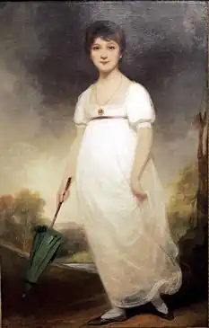

ОСТІН (Остен), Джейн (Austen, Jane — 16.12.1775. Стівентон, Гемпшир — 18.07.1817, Вінчестер) — англійська письменниця.Її внесок у літературу влучно охарактеризував В. Скотт: "Творець сучасного роману, події якого зосереджені довкола повсякденного укладу людського життя і стану сучасного суспільства". Одначе Скотт був одним із тих небагатьох, хто поціновував романи Остін за її життя. Визнання прийшло до неї значно пізніше, і пов'язане це було з тим, що Остін багато в чому випередила свій час. її романи, в яких відобразилися притаманні Остін розуміння людських стосунків і "глибокий такт, з яким вона малює характери" (В. Скотт), відрізнялися від романтичних творів її часу. їм не була властива атмосфера незвичного, екзотичного, таємничого. Вони були пов'язані з традиціями пізнього англійського Просвітництва (О. Ґолдсміт. Л. Стерн). їхній витончений психологізм, як свідчить наступний літературний розвиток, був призвістям прози майбутніх десятиліть. І тому невипадково, що справжнє відкриття Остін сталося значно пізніше від того часу, коли були написані та видані її книги. Але водночас Остін була дочкою своєї епохи, шанувальницею Дж. Н. Ґ. Байрона, і дух романтичних поривів та бунтарства був їй притаманний. Він проявився у неспокої духу її героїнь, невдоволених своєю долею, у їхній меланхолійності, гостроті розуму й іронії. Схожими властивостями була наділена й сама письменниця.
Достовірних свідчень про життя Остін збереглося небагато. Папери, що зосталися — письмові свідчення її короткого життя, — були спалені її сестрою, залишилися лише поодинокі, то дозволили С. Моему в його есе про Остін заузажити: "У міс Остен був гострий язичок і рідкісне почуття гумору", "Джейн безпомилково згадувала в людях глупство, претензії, афектозаність і нещирість, і до її честі слід сказати, що все це звеселяло її, а не завдавало прикрощів". Вона писала про найбуденніше, про те життя і тих людей, які її оточували. "На той час в Англії були сотні родин, які жили таким тихим, одноманітним і пристойним життям; чи не диво, що в одній із них, ні з того ні з сього, з'явилася високообдарована письменниця?" (С. Моем).
Батько Остін здобув освіту в Оксфорді, став священиком, мав парафію в Гемпширі. Його дружина належала до знатного дворянського роду. У сім'ї було восьмеро дітей: шестеро братів і дві сестри. Вони обидві не вийшли заміж : залишалися в батьківському домі до самої смерті, але жваво цікавилися всім, що відбувалося у великому світі, дізнаючись про новини від братів, друзів, родичів. Велося жваве листування, приходили газети, відбувалися зустрічі з очезидцями важливих подій. Остін лише кілька разів була в Лондоні; її життя проминуло у Стівентоні, Баті, куди, полишивши справи, разом з дружиною та доньками переселився батько, у Чотені та Вінчестері. Постійними супутниками Остін були книги. Вона почала писати в чотирнадцять років, і її першою літературною спробою став роман-пародія, в якому Остін висміяла популярні тогочасні чуттєві романи в листах. Іронічна інтонація звучить в усіх книгах Остін. Усі романи Остін були опубліковані в 1811 — 1818 pp., чотири з них побачили світ за життя письменниці, два — посмертно. До ранніх належать романи "Почуття і чуттєвість"("Sense and Sensibility"), "Гордість і упередження" ("Pride and Prejudice"), "Нортенґерське абатство" І "Northanger Abbey"); до пізніших — "Менсфілд-парк"("Mansfield Park"), "Емма" ("Emma") та "Доказирозуму" ("Persuasion"). Останньою прижиттєвою публікацією був роман "Емма ". У 1818 р. вийшли друком "Нортенґерське абатство" і "Докази розуму". Вдосконалення художньої майстерності Остін виявилося в поглибленні психологізму. Кожен роман складається з образків родинного життя людей, що належали до "середньої" верстви англійського суспільства. Продовжуючи традиції С. Річардсона, Г. Філдінґа, Л. Стерна, Остін розвиває форми звичаєвого роману, відображаючи в конкретних ситуаціях повсякденності явища суспільної значущості (мораль, виховання, грошові проблеми, ведення господарства, вади та чесноти). Остін створила галерею соціальних типів, використовуючи сатиричні прийоми зображення, не плекаючи ілюзій стосовно своїх героїв, оскільки щоразу вона писала про життя, яке знала зі свого власного досвіду. У неї пильне око, тонка спостережливість, майстерність оповідача. Головна тема "Нортенгерського абатства" — прилучення до реальності молодої дівчини Кетрін Морланд, котра входить у життя. Літературні захоплення перешкоджають Кетрін бачити життя таким, яким воно є. Вона зачитується "романами жахів", "Удольфськими таємницями" Е. Редкліф, її сприйняття навколишнього підпало під вплив цього "сенсаційного" роману. Відчуття реального прокидається в Кетрін під час її перебування в Баті, під впливом знайомства і бесід з розумним та освіченим Генрі Тілні, котрий розуміє її; кохання до нього допомагає їй знайти себе. Це один із варіантів "роману виховання". Остін звертається до традиційної теми подорожі, під час якої перед героїнею відкриваються нові сторони життя. Кетрін проходить школу "виховання почуттів". Сюжетна лінія роману невибаглива, розповідь про події ведеться у їхній часовій послідовності: дитинство героїні, поїздка в Бат, відвідання Нортенгерського абатства, повернення додому. Але тепер уже Кетрін стала іншою. Особливий інтерес становлять не події, а те, як ведеться оповідь, як зображаються люди і все, що з ними відбувається, той іронічний коментар, який дається від особи автора. Щирість почуттів, безкорисливість у коханні, вірність у дружбі, порядність, прагнення до знань, розумне ставлення до життя утверджуються як головні вартості буття. Свої уявлення про прекрасне Остін пов'язує з гідним і добрим. Роман "Менсфілд-парк" належить до зрілого періоду творчості Остін. Він був видрукуваний у 1814 р. Невеликий наклад розійшовся за шість місяців. У цьому романі блискуче виявилася майстерність художньої виразності Остін. Письменниця передає "гру почуттів", переливи настроїв героїв, вона захоплена складністю людських взаємин. Життя мешканців англійського маєтку стає джерелом, що наснажує творчу уяву письменниці. Створена картина життя невеликої групи людей містить в собі не лише спостереження, а й узагальнення про мораль та звичаї провінційного дворянства та духовенства, критику корисливості й егоїзму. Читач потрапляє у середовище людей нічим не примітних, їхні інтереси дрібні, а помисли не сягають далі особистих вигод і вподобань. Низка безглуздих вчинків і дій, здійснюваних персонажами, нагадує карусель, що крутиться без упину. Між дійовими особами спектаклю, що розгортається на сторінках роману, немає розуміння і єдності. "Кожен з них, далебі, не всім задоволений і не від усього отримує радість, вимагає чогось, чого в нього немає, і тим самим дає решті підстави для невдоволення". Як жити? Як внести розумний первень у цей хаос загальної незгоди? Це питання постає в усіх романах Остін, а в "Менсфілд-парку" воно стає головним. Серед героїв немає нікого, хто би міг відповісти. Розповідаючи історію Фанні Прайс, на нього відповідає сама Остін. З образом Фанні пов'язана головна тема роману — тема морального прозріння. Сама присутність дівчини серед мешканців Менсфілд-парку, її доброта, безкорисливість, стійкість допомагають виявити слабкості та вади тих, хто її оточує: себелюбство та жадібність місіс Норріс, хибні погляди Едмунда, хитрість і обачність Мері Крофорд, тупість Рашуота, нахабність Генрі. Історія Фанні, обставини, в які вона потрапляє, її страждання допомагають їй збагнути себе і знайти своє щастя. До морального прозріння приходить і Едмунд. Перероджується Том Бертрам. "Він спізнав страждання та навчився думати", — пише Остін про Тома. Ці слова стосуються й інших героїв роману. Романи Остін — поєднувальна ланка між творчістю романістів епохи Просвітництва і реалістами XIX ст. Як явище перехідне, романи Остін виявляють тенденцію до висвітлення не стільки руху героя у просторі та часі, скільки зацікавлення його характером, взаєминами з навколишніми, фіксацією настроїв і почуттів. Тема морального прозріння, пошуку моральних орієнтирів та етичних вартостей Остін продовжила в "Еммі" й "Доказах розуму".Серед англійських письменників XX ст. шанувальниками Остін були В. Вулф, С. Моем, Ґ. К. Честертон, Р. Олдінгтон, Дж.Б. Прістлі; до числа своїх учителів її зараховував О. Форстер. "Вона проста і природна, як сама природа", — писав про Остін Честертон. "Їй притаманні особлива довершеність і досконалість", — зауважувала Вулф. "Її хвилюють не абстрактні принципи, а щастя людей", — каже про Остін сучасний англійський літературознавець А. Кета.